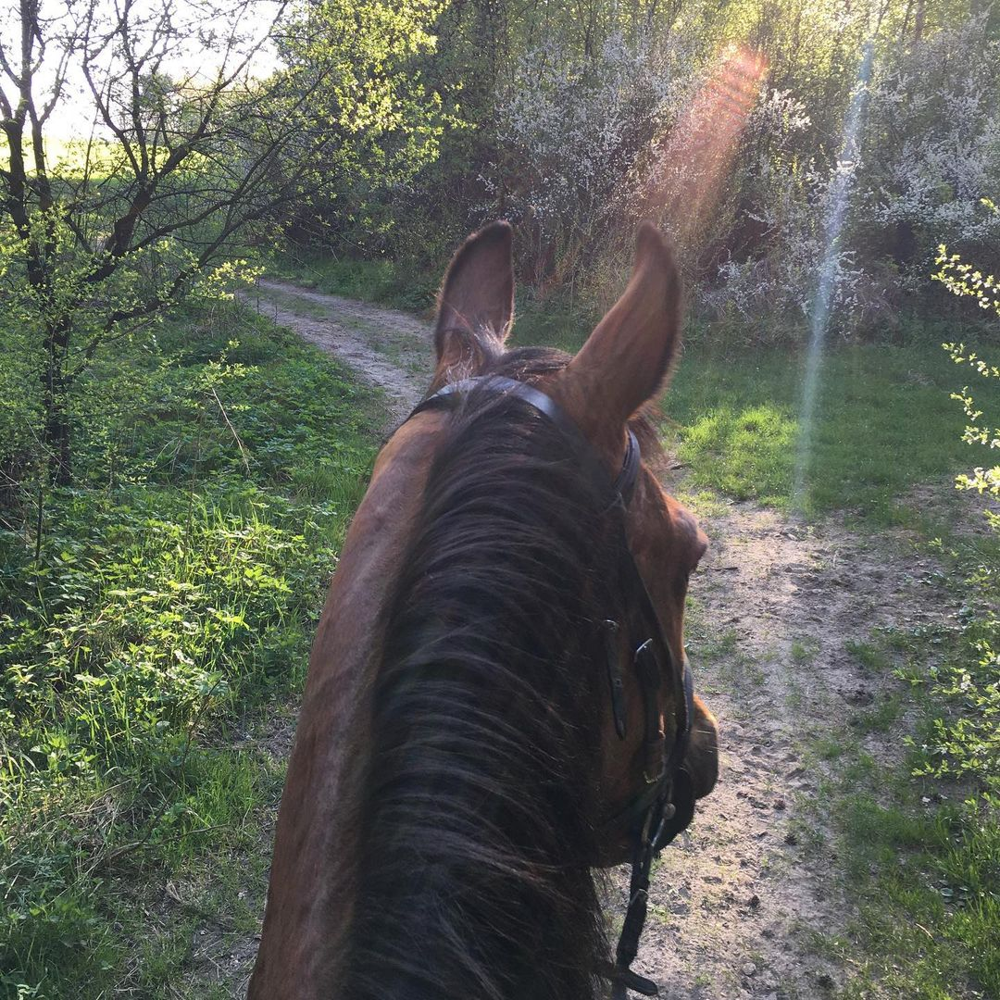
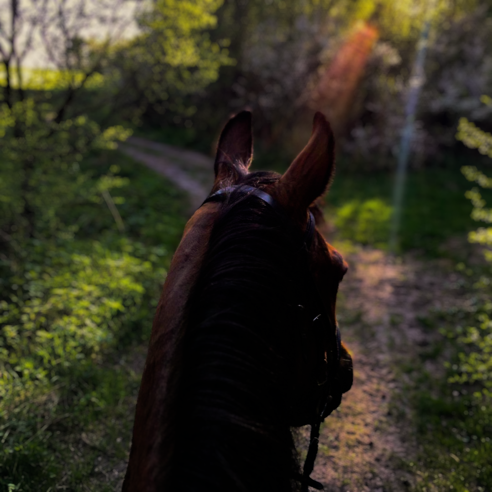

Na pewno posiadasz jakieś ulubione zdjęcie.
Jednak nie podobają ci się kolory na zdjęciu oraz styl jego wykonania.
Jeśli tak to spokojnie możesz do mnie się z tym zgłosić.
Ja z chęcią ci pomogę dobrać kolory w zdjęciu oraz dodać blur.
(To przykład moich umiejętności jeśli masz inny problem dotyczący zdjęcia również możesz się do mnie zgłosić)
Zwykłe

Przerobione
